Invitations is a collection of invitations I have designed for various occasions. These projects were completed for friends and family or just for fun. The low-stakes nature of these projects allows for my personal style to shine through as I was given full creative freedom. These projects involved much experimentation and playing around, which made the process enjoyable. Even more enjoyable was the opportunity to lovingly create something for someone in my life for their life milestone.
This going away party invitation was designed for my partner and I when we moved from San Francisco to New York City. I wanted to use imagery of both the Golden Gate Bridge and the Brooklyn Bridge to symbolize our journey into a new chapter of life. I liked the sharp lines that were coming from my selected images and decided to lean into those lines to structure the invitation's layout. After playing with manipulating the imagery, I ended with the grunge texture that I felt was appropriate for a move between two major cities. In the end, I decided to focus solely on the Brooklyn Bridge with a severe crop to abstract the image.
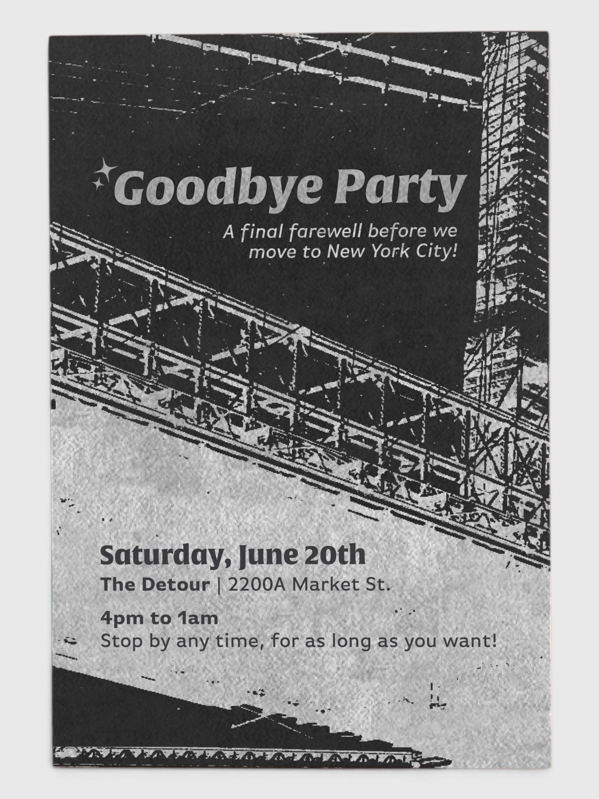
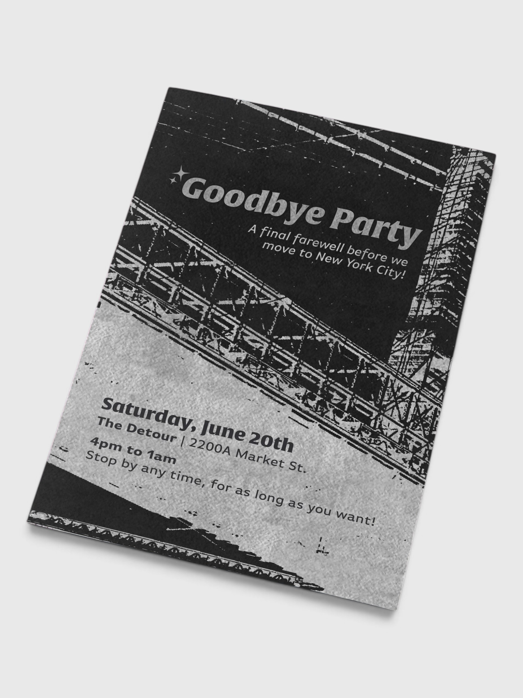
27th birthday party invitation
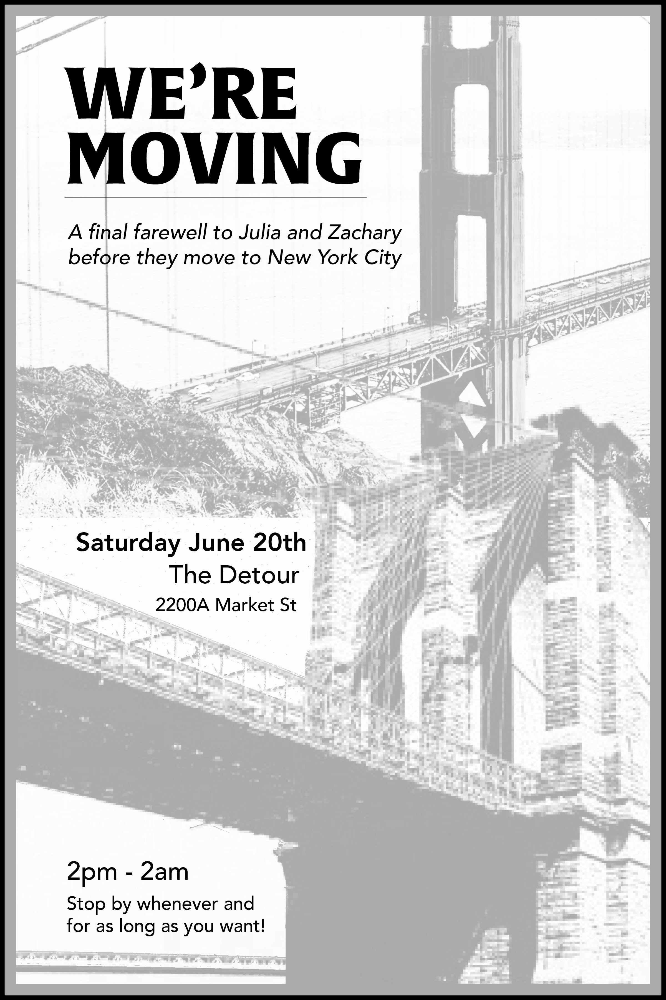
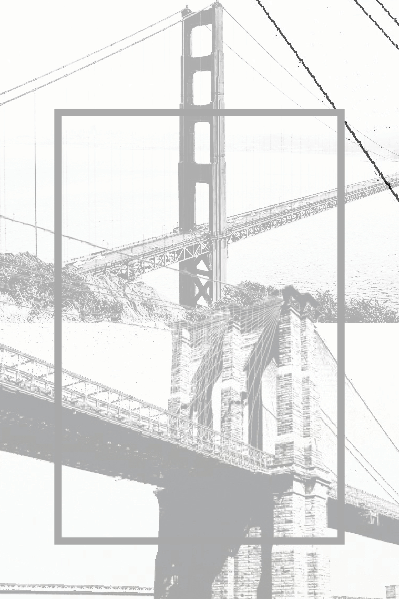
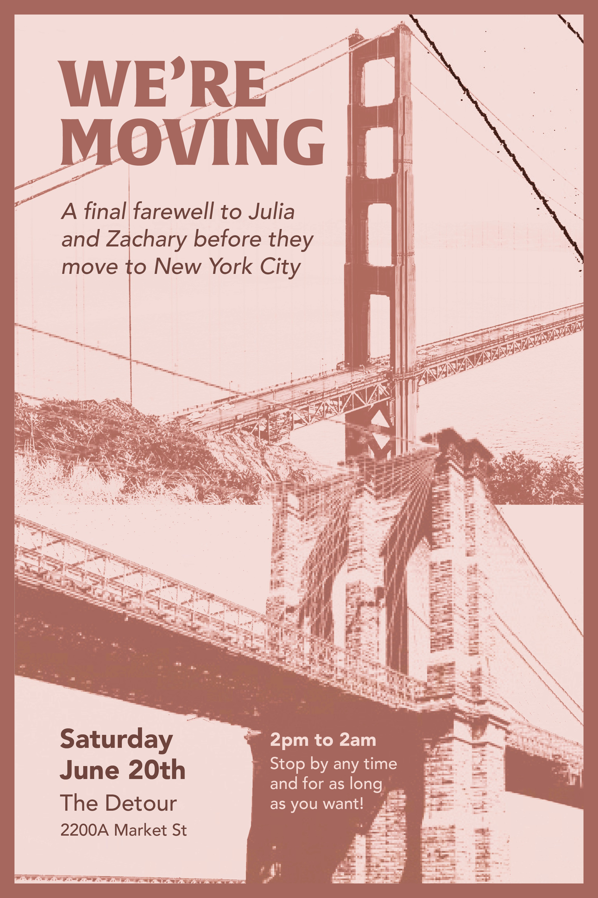
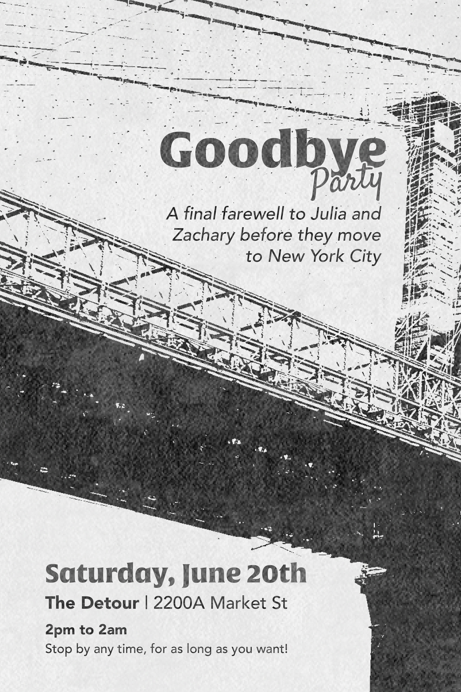
digital sketches
This wedding invitation was designed for my twin sister and her husband's wedding. The bride and groom had a specific vision of a newspaper theme for the invite since the colors for their ceremony were black and white. They were getting married on a boat in the Chicago river, so leaned into some nautical terms in the copy of the invite.
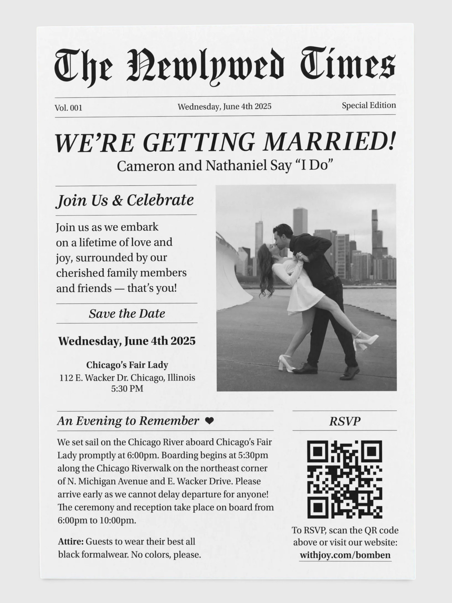
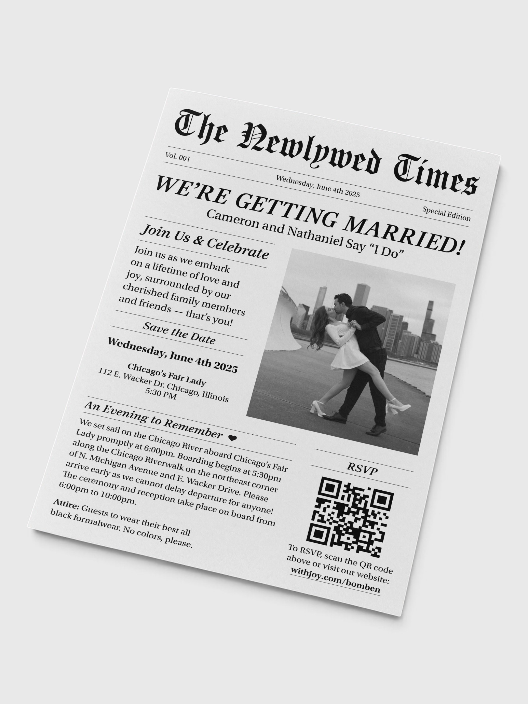
Cameron and Nathanial wedding invitation
This birthday party invitation was designed for my 27th birthday party. I started with font exploration and found this bold serif font for the number 27 that became the main imagery for the invite. I was inspired by promotional posters for night clubs for the distorted lighting effects. I had initially intended to use color in this piece, but a friend was firm that the black and white version was most fitting and I ultimately agreed.
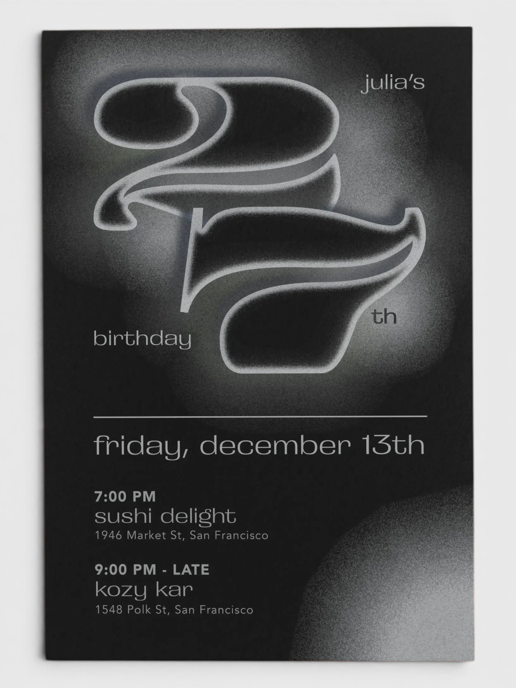
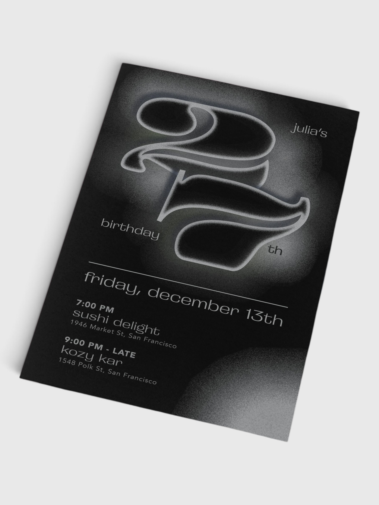
27th birthday party invitation
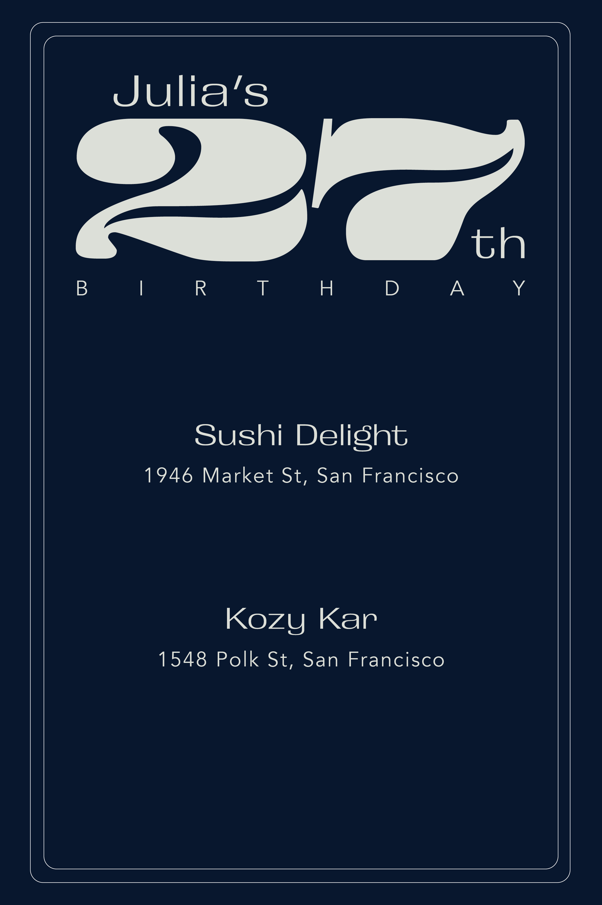
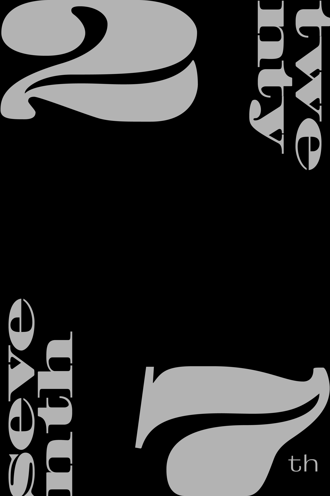
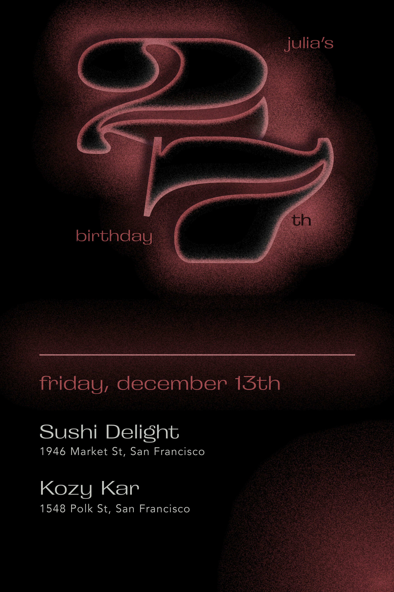
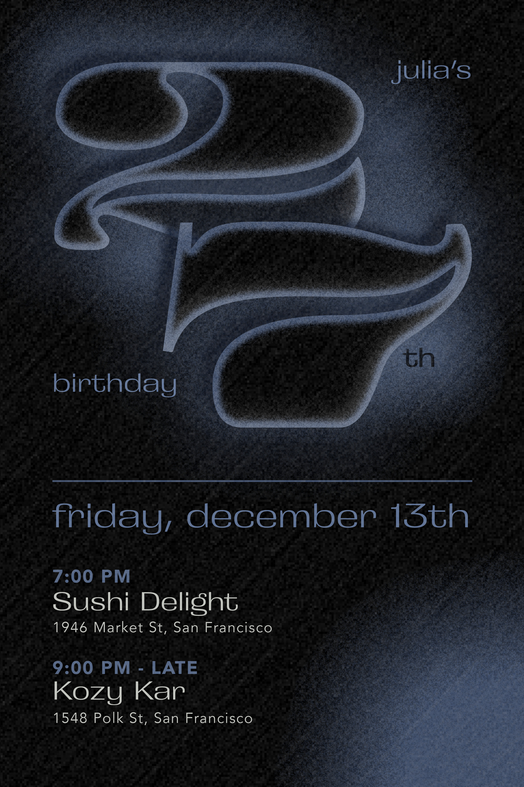
digital sketches